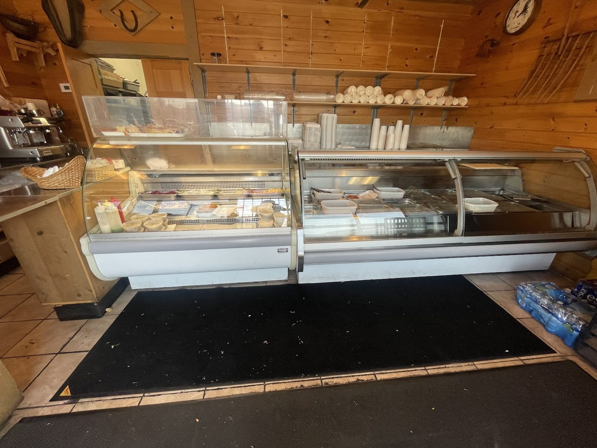

Erin Mills · Mississauga
Home-style Polish food from the hot table
Polcan Gospoda is a Polish restaurant at 3105 Winston Churchill Blvd in Erin Mills. Google lists it as a Polish restaurant with takeout. Reviewers describe a small shop where you take a box, choose from the day’s hot table, and pay by weight.
- Polish hot table
- Sold by weight
- Takeout
- Erin Mills
What’s on the table
The daily hot table
Reviewers describe a lunch-counter setup: you grab a box and mix dishes from the trays behind the glass. Rachel Ko, lyndsay, Bruce North and Joshua Salamun all wrote that you pay by weight. The selection changes, and reviewers mention that some items are not out every day.
Dishes people come back for
On Google, reviewers name pork meatballs in gravy, kopytka (potato dumplings), krokiety (Polish croquettes — Johannes Chan spelled it “krokeity”), breaded schnitzel, cabbage rolls, slaw and cucumber salad, and crepes with a sweet cheese filling. Those are customer descriptions, not a posted menu on this page.
Catering and party trays
The shop’s listing on polacy.ca, a Polish-Canadian directory, includes a first-person note that they serve retail customers and also provide catering, and that they specialize in small and medium gatherings, from office parties to small weddings. That is the shop’s own wording on that directory page (read Nov 24, 2026). Call to ask about a tray or a party order. No prices from that listing are shown here.
These details come from Polcan Gospoda’s public Google listing and reviews, and from the shop’s “O nas” text on polacy.ca, all read Nov 24, 2026. The page does not list prices.
A small Polish counter in Erin Mills
The shop sits at 3105 Winston Churchill Blvd in Mississauga. Reviewers describe a compact room with a couple of high stools and a ledge by the window, and a hot table you pack yourself.
Google’s listing does not have a working website of the shop’s own. The “Website” button currently points at panoramafirm.ca, a third-party directory whose domain no longer exists. The surest way to reach the shop is to call or visit during the hours above.
What customers say
4.7 ★ from 106 Google reviews (checked Nov 24, 2026). Quotes are word for word. Each one says where it was read: on the Google listing itself, or on a public page that copies reviews.
★★★★★
Really enjoyed the food here. I think maybe my first time trying kopytka and it was really nice. Really enjoyed the surówka z kapusty slaw and mezeria cucumber salad. The dill is subtle and refreshing. Love the cauliflower and my partner enjoyed the kotlet schabowy schnitzel. I especially loved the krokeity (like a Polish croquette). Perfect lunch counter to grab take out from heat up at home and feast.
★★★★★
First time having polish food and the pork meatballs blew my mind!! They were so tender and flavorful along with the gravy it sits in, I ended up ordering seconds. They charge by weight here, meaning you can mix and match anything you’d like. I originally came in for perogies but sadly they didn’t have any today. I ended up getting a small plate with chicken schnitzel (very generously sized chicken breast), potato dumplings, and pork meatballs. Schnitzel and dumplings were a little cold, if you reheated them at home they’d be a lot better but it was still really good! I ate inside, there are two high chairs and a ledge by the window to sit. The place is super small and there’s no menu, but peep the pictures because when you step into a food spot and the place looks like this, you know the food is going to be fire. Hopefully on my next visit I can try their perogies! Will definitely be back for their pork meatballs and other items.
★★★★★
The food is excellent. You pay based on weight, so the wide variety of food is very welcome. This is the place to go for homemade style Polish food!! I also highly recommend the crepes with sweet cheese filling, it's so good!
★★★★★
I love how you can grab a box and load up whatever you feel like having. Makes the decision process easier. A little bit of this and a little bit or that. Love the food here. Feels healthy and feels great after eating a lot. Highly recommend if you're looking for european style home cooked foods.
From the counter and the table
Real photos from the shop’s public Google listing and from customer reviews, downloaded Nov 24, 2026. The only exterior photo on the listing is a small official shot of the shopfront. Tap to enlarge.
Visit the shop
3105 Winston Churchill Blvd
Mississauga, ON L5L 1P5
Erin Mills
| Monday | 10 a.m.–5 p.m. |
|---|---|
| Tuesday | 10 a.m.–5 p.m. |
| Wednesday | 10 a.m.–5 p.m. |
| Thursday | 10 a.m.–5 p.m. |
| Friday | 10 a.m.–5 p.m. |
| Saturday | 9 a.m.–3 p.m. |
| Sunday | Closed |
Hours are from the Google listing, checked Nov 24, 2026: Monday–Friday 10 a.m.–5 p.m., Saturday 9 a.m.–3 p.m., Sunday closed. Restaurantji, fetched the same day, lists the same hours. The shop’s polacy.ca listing says weekdays close at 6 p.m., not 5. Yellow Pages lists Monday–Saturday 8:00 a.m.–8:00 p.m. (and unit 23, with postal code L5L 5S3 instead of Google’s L5L 1P5). This page uses Google’s hours and address. If you are arriving near opening or closing, please call first.